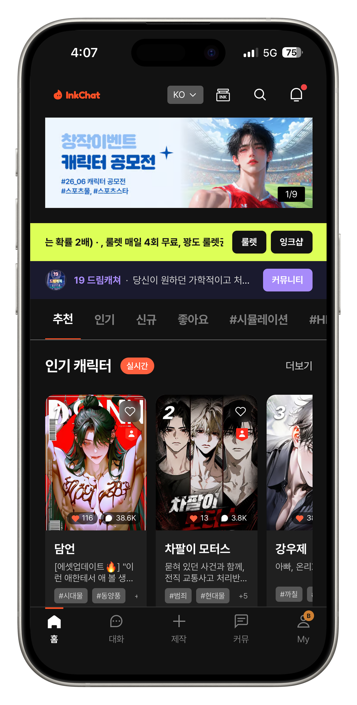
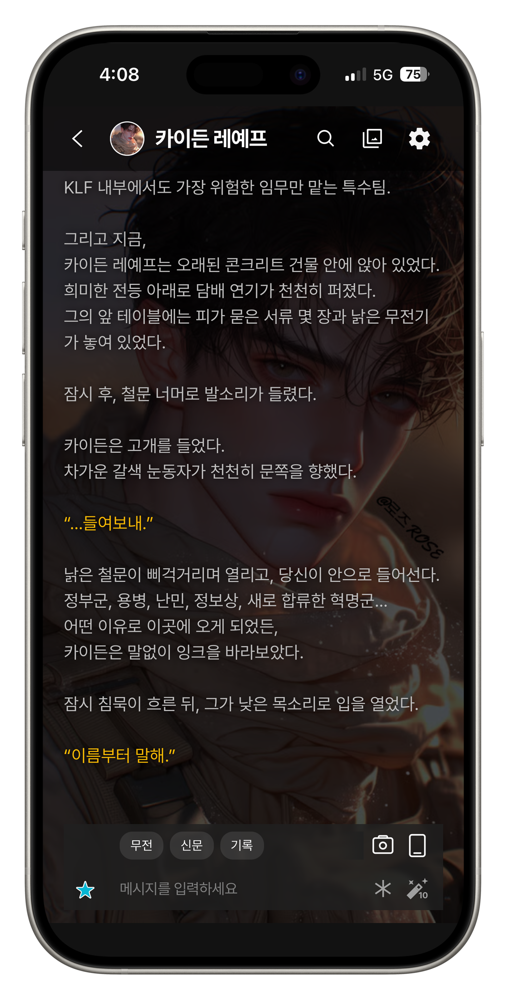
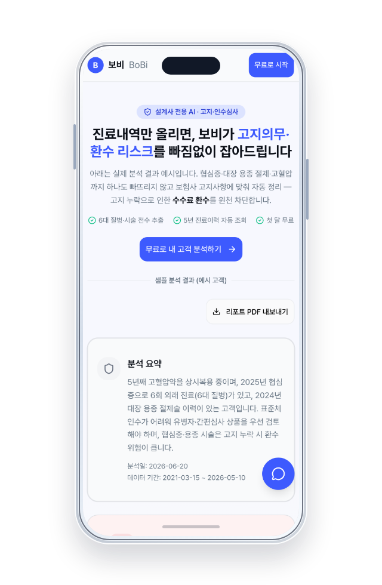
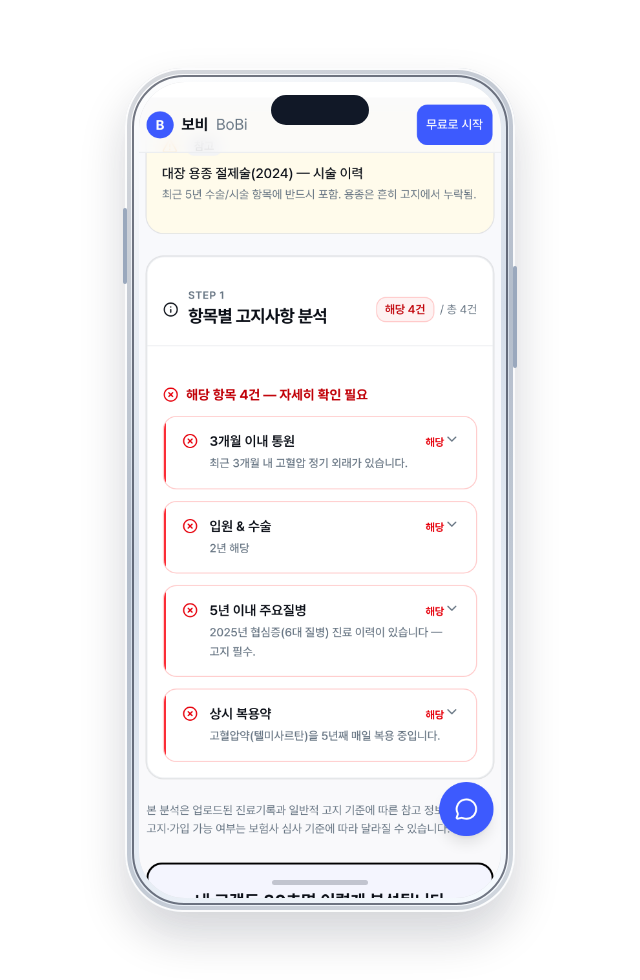

01 / CONSUMER AILIVE PRODUCT ↗


INDEPENDENT AI PRODUCT COMPANY SEOUL / 2026
바틀은 대화형 AI와 도메인 자동화 SaaS를 기획·개발·운영합니다. 소비자 AI 경험부터 보험·의료 현장의 업무 흐름까지, 실제 사용되는 제품으로 전환합니다.
THE MISSION
AI THAT WORKS IN THE REAL WORLD
기술의 가능성을 보여주는 데서 멈추지 않습니다. 사용자 맥락, 도메인 데이터, 인터페이스와 운영 체계를 하나로 연결해 매일 쓰이고 계속 개선되는 AI 제품을 만듭니다.
PRODUCT SYSTEMS
소비자 대화 경험부터 전문가의 판단과 반복 업무까지.




상담, 기록, 후속 업무를 연결하는 의료기관 운영 자동화 시스템.
CAPABILITIES
사용자 문제와 사업 성과를 기준으로 AI가 가장 잘 작동할 제품 구조를 설계합니다.
DISCOVERY / VALIDATION / ROADMAP프롬프트가 아닌 맥락과 기억을 중심으로 자연스럽고 일관된 대화 경험을 만듭니다.
MEMORY / PERSONA / SAFETY복잡한 도메인 규칙과 데이터를 실제 업무 흐름 속 자동화 시스템으로 전환합니다.
RAG / WORKFLOW / INTEGRATION출시 이후의 품질, 지표, 피드백을 추적하며 제품이 계속 학습하도록 운영합니다.
EVALUATION / ANALYTICS / ITERATIONHOW WE BUILD
사용자 문제와 성공 지표를 구체화합니다.
→모델·데이터·인터페이스의 구조를 설계합니다.
→검증 가능한 제품을 빠르게 구현합니다.
→실제 데이터로 측정하고 지속적으로 개선합니다.
↗HAVE A PROBLEM WORTH SOLVING?